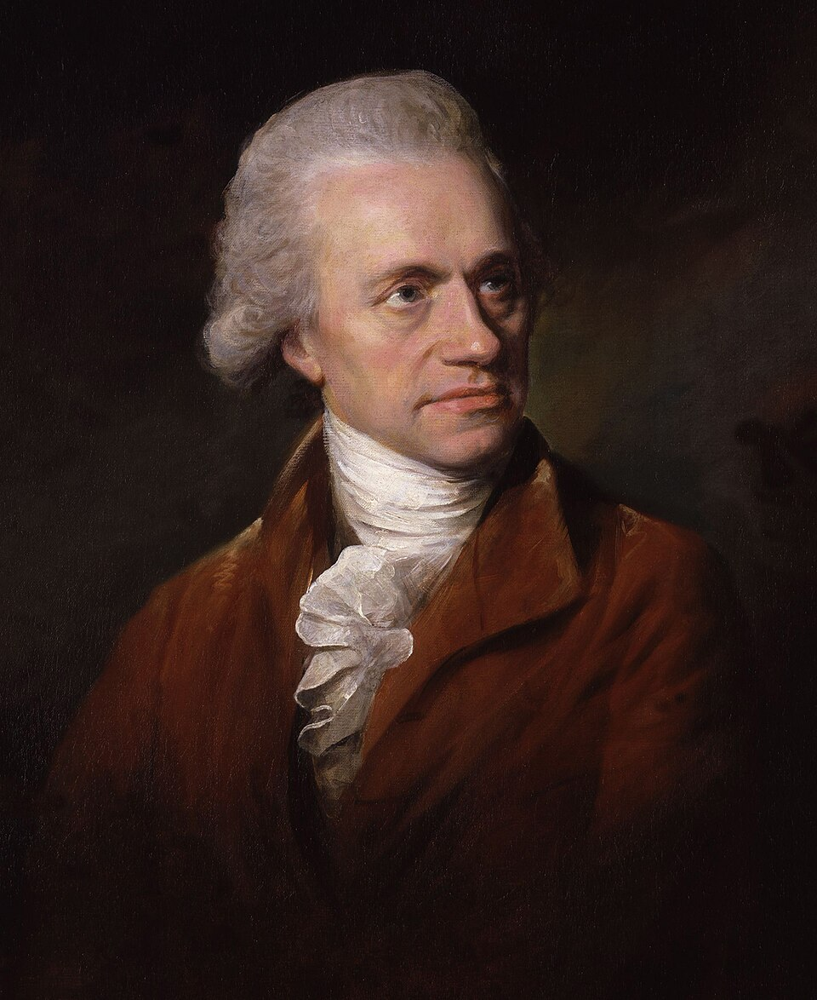
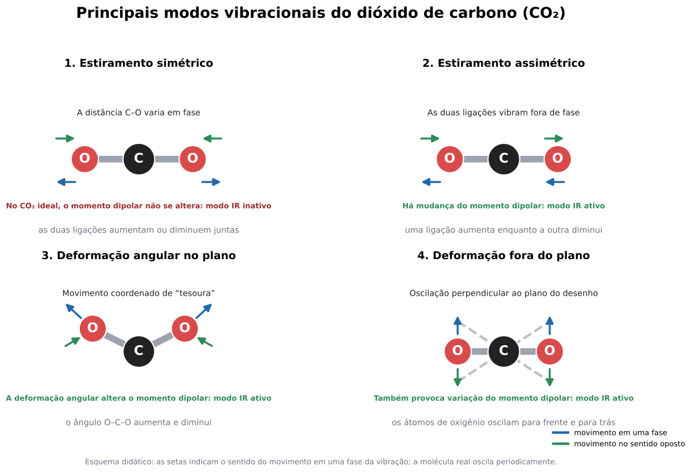
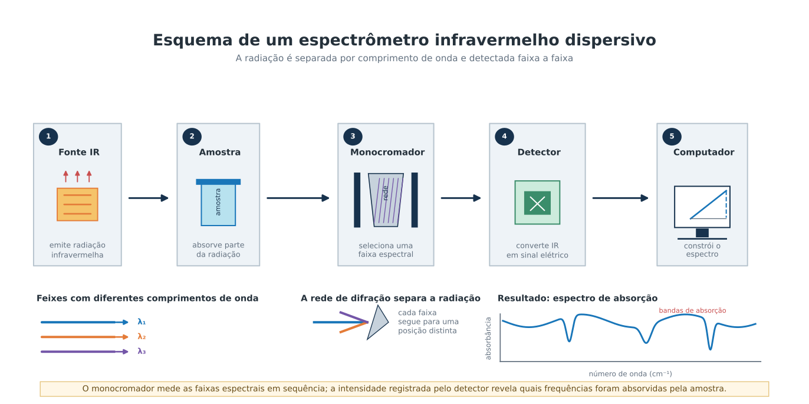
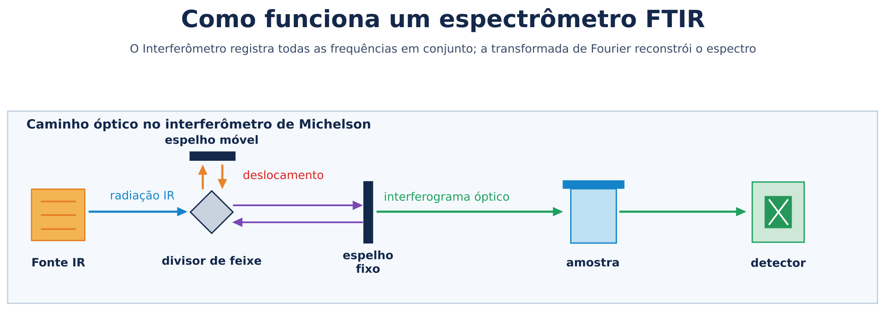
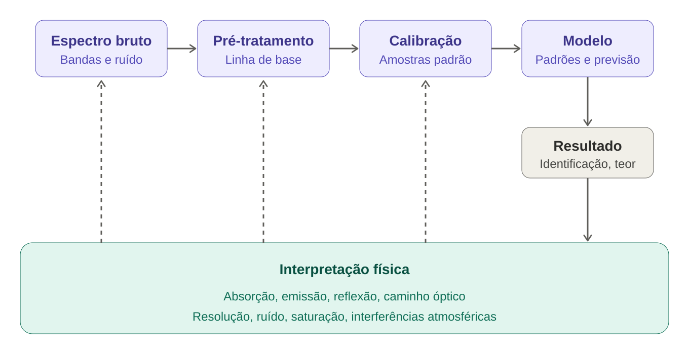

História e Evolução do Efeito Infravermelho
O infravermelho é uma faixa de radiação eletromagnética com comprimentos de onda maiores que os da luz visível, portanto situada além da extremidade vermelha do espectro. O olho humano não a vê, embora a energia infravermelha possa ser percebida indiretamente como aquecimento. A interação da radiação infravermelha com a matéria pode ocorrer por absorção, emissão ou reflexão. Ao registrar a intensidade da radiação em função do comprimento de onda ou do número de onda, a espectroscopia transforma um fenómeno invisível em uma espécie de assinatura física de átomos, moléculas e materiais.
Na região do infravermelho, essa assinatura está relacionada principalmente às vibrações e rotações moleculares. Ligações químicas podem vibrar como sistemas elásticos; quando uma vibração provoca mudança no momento dipolar da molécula, ela pode absorver radiação infravermelha. Assim, grupos funcionais aparecem em faixas características. O espectro resultante pode ser comparado com padrões conhecidos para identificar substâncias ou acompanhar transformações químicas.
A evolução da espectroscopia infravermelha passou por quatro grandes etapas: a descoberta da radiação além do vermelho; a construção de detectores e instrumentos capazes de medir espectros; a interpretação molecular das bandas de absorção; e a transformação dos espectrômetros em sistemas digitais, rápidos, miniaturizados e combinados com microscopia, imagem e análise computacional.

A Descoberta de uma Região Invisível do Espectro
O primeiro marco ocorreu em 1800, quando William Herschel investigou o aquecimento produzido por diferentes cores da luz solar. Ele dispersou a luz com um prisma e posicionou termómetros nas regiões coloridas e também além do vermelho visível. A temperatura aumentou em direção ao vermelho e continuou elevada numa região onde o olho não percebia luz. Herschel publicou os resultados em Philosophical Transactions of the Royal Society, em um artigo datado de 31 de dezembro de 1800.
Herschel chamou o fenômeno de "calor radiante" e falou em "raios invisíveis". A interpretação como uma região do espectro eletromagnético é posterior. Na época, a teoria eletromagnética ainda não havia sido formulada, e calor e luz eram frequentemente tratados como fenômenos distintos. Mesmo assim, o experimento criou a condição fundamental para a espectroscopia infravermelha: mostrou que a distribuição da radiação solar não terminava nas cores visíveis.
A primeira dificuldade era instrumental. A radiação infravermelha não podia ser observada diretamente pelo olho e, em muitas regiões, era absorvida pelo vidro comum. Por isso, a pesquisa avançou com termômetros, termopares, termopilhas, bolômetros, prismas e materiais transparentes ao infravermelho, como o sal de rocha.
Em 1821, o efeito Seebeck forneceu a base para o uso de termopares como detectores térmicos. Termopares convertem diferenças de temperatura em sinais elétricos; termopilhas reúnem vários desses elementos para aumentar a resposta. Em 1878, Samuel Pierpont Langley inventou o bolômetro, capaz de detectar variações muito pequenas de temperatura por meio da alteração da resistência elétrica de uma tira metálica. Esses detectores não produziam automaticamente um espectro, mas permitiam medir a intensidade da radiação com maior sensibilidade.
O passo seguinte foi separar a radiação por comprimentos de onda e estudar quais regiões eram absorvidas por diferentes materiais. Sir John Frederick William Herschel, filho de William Herschel, estendeu pesquisas espectrais para o infravermelho e é associado ao registro de linhas de Fraunhofer nessa região por volta de 1840. Mais tarde, William de Wiveleslie Abney e Edward Robert Festing investigaram bandas infravermelhas associadas a compostos orgânicos. Esses trabalhos ajudaram a deslocar a pergunta científica: já não bastava saber que havia "calor" além do vermelho; era preciso determinar como diferentes substâncias absorviam a radiação.
No fim do século XIX, pesquisadores como Heinrich Rubens, Friedrich Paschen e William Weber Coblentz ampliaram a medição de espectros infravermelhos. Coblentz, em particular, realizou um amplo levantamento de espectros de compostos químicos no início do século XX. A organização desses dados foi decisiva para que o infravermelho deixasse de ser apenas uma curiosidade física e se tornasse uma ferramenta de análise química.
A Interpretação Molecular
A espectroscopia infravermelha ganhou seu significado analítico quando as bandas passaram a ser relacionadas aos movimentos internos das moléculas. No infravermelho próximo, predominam frequentemente sobretons e combinações de vibrações fundamentais. No infravermelho médio, aparecem muitas vibrações fundamentais de estiramento e deformação. No infravermelho distante, também podem ser estudados modos de baixa energia, incluindo movimentos associados a moléculas pesadas e redes cristalinas. As fronteiras entre essas regiões são convencionais e variam conforme a área e o instrumento.
Uma molécula pode estirar uma ligação, dobrá-la ou movimentar vários átomos de maneira coordenada. A absorção ocorre quando a frequência da radiação corresponde à energia de uma vibração permitida. A regra física mais importante é a mudança do momento dipolar: uma vibração que não altera o momento dipolar tende a não ser ativa no infravermelho. No dióxido de carbono, por exemplo, o estiramento assimétrico é ativo, enquanto o estiramento simétrico não produz absorção infravermelha da mesma maneira.

Essa relação entre vibração e absorção produziu duas formas complementares de leitura. A região de grupos funcionais permite reconhecer padrões associados a ligações químicas específicas. Já a região conhecida como "impressão digital" reúne muitas bandas, cuja combinação é característica de uma molécula ou de uma classe de compostos. Com bibliotecas de espectros de referência, tornou-se possível comparar uma amostra desconhecida com milhares de padrões armazenados.
A partir desse momento, o efeito infravermelho deixou de ser apenas uma propriedade da radiação e passou a ser um método de identificação estrutural. Um espectro podia indicar a presença de água, hidroxilas, carbonilas, hidrocarbonetos, proteínas, polímeros, minerais e muitos outros materiais.
Dos Espectrômetros Dispersivos aos Instrumentos de Rotina
Os primeiros espectrômetros infravermelhos analíticos eram instrumentos dispersivos. Uma fonte emitia radiação infravermelha, um monocromador ou uma rede de difração separava os comprimentos de onda e um detector media a intensidade de cada faixa, geralmente em sequência. A amostra era comparada com uma referência para determinar onde a radiação havia sido absorvida.
Esse método era conceitualmente direto, mas apresentava limitações. A varredura de uma região extensa era relativamente lenta. A energia disponível era baixa em algumas faixas. A estabilidade da fonte e do detector influenciava o resultado. Além disso, a atmosfera do laboratório podia introduzir absorções de vapor de água e dióxido de carbono.

Segundo a JASCO, espectrômetros infravermelhos foram desenvolvidos nos Estados Unidos em meados da década de 1940, inicialmente para pesquisa de compostos orgânicos, especialmente na área petroquímica. Os primeiros instrumentos japoneses foram fabricados em 1954. Nos equipamentos dispersivos, uma grade de difração separava a radiação e um termopar detectava a intensidade de cada comprimento de onda; configurações de duplo feixe ajudavam a corrigir o fundo durante a medição.
A expansão da espectroscopia no pós-guerra esteve ligada a avanços simultâneos em química orgânica, eletrônica, detectores e processamento de dados. A técnica passou a ser usada não apenas para observar moléculas isoladas, mas também para controlar matérias-primas, analisar produtos farmacêuticos, caracterizar polímeros e acompanhar processos industriais.
A Revolução do FTIR
A maior transformação instrumental ocorreu com a espectroscopia infravermelha por transformada de Fourier, conhecida como FTIR. Em vez de separar a radiação e medir cada frequência sucessivamente, um espectrômetro FTIR utiliza um interferômetro, geralmente do tipo Michelson.
No interferômetro, um divisor de feixe separa a radiação em dois caminhos. Um espelho permanece fixo e o outro se movimenta. Quando os feixes retornam e se recombinam, produzem interferência construtiva ou destrutiva conforme a diferença entre os caminhos ópticos. O detector registra a intensidade resultante enquanto o espelho se desloca. O sinal obtido é chamado interferograma.
O interferograma não é ainda o espectro convencional. Ele representa a resposta da amostra no domínio da diferença de caminho óptico. Um algoritmo de transformada de Fourier converte esse sinal em intensidade em função do número de onda. O computador realiza, portanto, uma operação matemática que reconstrói o espectro a partir do padrão de interferência.
A ideia de relacionar interferogramas e espectros remonta ao trabalho de Lord Rayleigh, no fim do século XIX. A aplicação prática à espectroscopia avançou com pesquisadores como Peter Fellgett, e o desenvolvimento de algoritmos rápidos de transformada de Fourier por Cooley e Tukey, em 1965, foi decisivo para tornar o processamento computacional viável.
Instrumentos FTIR comerciais pioneiros apareceram entre meados da década de 1960 e a década de 1970; a técnica se difundiu amplamente nos laboratórios nas décadas seguintes e tornou-se dominante em muitos contextos durante os anos 1990. A técnica oferece vantagens importantes: o FTIR registra simultaneamente a informação multiplexada de uma faixa de números de onda (em vez de varrer cada frequência em sequência), aproveita melhor a energia disponível, permite maior velocidade e melhora a relação sinal-ruído quando várias aquisições são acumuladas.
Essa mudança não foi apenas uma troca de peças ópticas. Ela alterou o ritmo da pesquisa. Um espectro podia ser adquirido rapidamente, processado, subtraído de um fundo, comparado com uma biblioteca e associado a modelos quantitativos. O instrumento passou a ser um sistema integrado de óptica, eletrônica, computação e quimiometria.

A espectroscopia no infravermelho próximo, ou NIR, desenvolveu-se em paralelo. Suas bandas são frequentemente mais largas e menos individualizadas do que as do infravermelho médio, pois envolvem sobretons e combinações. Isso pode dificultar a interpretação direta, mas favorece análises rápidas e não destrutivas de materiais em condições próximas às do processo real.
Com fontes estáveis, detectores semicondutores e métodos estatísticos, o NIR passou a ser usado para estimar umidade, composição, concentração e propriedades físicas. A análise depende de calibrações construídas com amostras de referência e de métodos quimiométricos, como regressão multivariada. Assim, o espectro deixou de ser lido somente como um conjunto de picos; tornou-se também uma matriz de dados para previsão quantitativa.
No infravermelho médio, o FTIR consolidou a identificação de grupos funcionais e a caracterização estrutural. No NIR, a velocidade, a penetração relativa e a possibilidade de análise sem preparo complexo favoreceram aplicações em agricultura, alimentos, fármacos, controle de processos e triagem industrial. No infravermelho distante, a espectroscopia passou a contribuir para o estudo de materiais inorgânicos, minerais e modos vibracionais de baixa energia.
A evolução recente combinou espectroscopia e microscopia. Um espectrômetro FTIR pode ser acoplado a uma platina motorizada para medir diferentes pontos de uma amostra. O resultado é um mapa em que cada pixel contém um espectro ou uma informação espectral selecionada.
A Espectroscopia Infravermelha Contemporânea
Hoje, a espectroscopia IR reúne instrumentos de bancada, sistemas portáteis, microscópios, sensores de processo e plataformas acopladas a inteligência computacional. A miniaturização permite levar o espectrômetro para o campo, para linhas de produção, para ambientes clínicos ou para o patrimônio cultural. Detectores mais sensíveis, fontes mais estáveis e eletrônica mais rápida aumentam a velocidade e reduzem a quantidade de amostra necessária.

A análise contemporânea também depende cada vez mais de bases de dados e modelos estatísticos. A identificação de uma substância pode combinar posição das bandas, intensidade relativa, forma do pico, comparação com bibliotecas e algoritmos de classificação. Em medições quantitativas, o desempenho depende da qualidade da calibração, da representatividade das amostras e do controle das condições experimentais.
A interpretação física, entretanto, continua sendo indispensável. Um modelo estatístico pode reconhecer padrões, mas não elimina a necessidade de compreender absorção, emissão, reflexão, caminho óptico, resolução, ruído, saturação e interferências atmosféricas. A história da técnica mostra justamente que cada avanço computacional dependeu de uma compreensão mais precisa da radiação e da matéria.